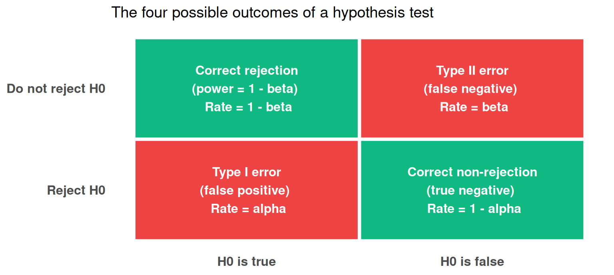
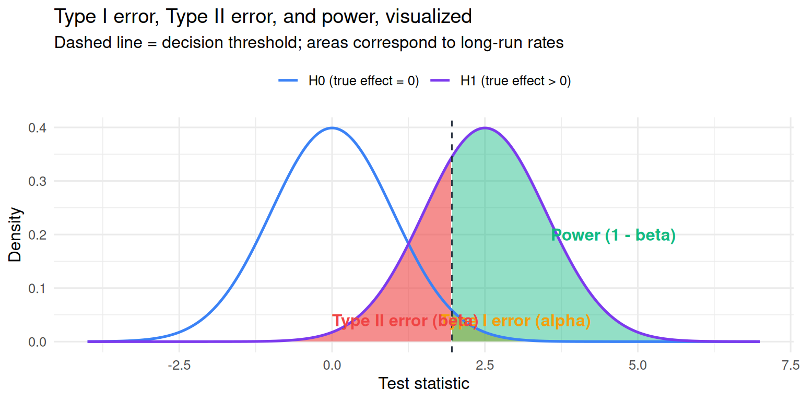
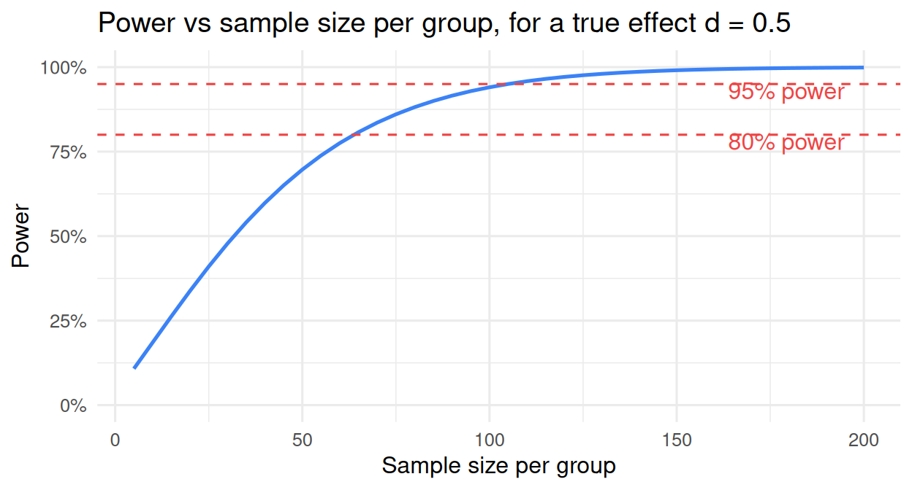

24 Decisions, errors, power, and SESOI
24.1 Where we are
Chapters 21-23 built the machinery of statistical inference: sampling distributions, standard errors, p-values, test statistics, reference distributions, degrees of freedom. By the end of Chapter 23 you could read every column of summary(lm(...)) and explain what R was computing when it printed a p-value.
This chapter steps back and looks at the decision-theoretic side of the Neyman-Pearson framework. We have been treating the procedure (“reject if p < α”) as if it were a mechanical step. Now we ask: what happens when the procedure is wrong? What kinds of errors are there, what are their probabilities, and how should those probabilities trade off against each other? And, just as importantly, what does it actually mean to “have 80% power” for a study? The conventional answer is incomplete in a way that has practical consequences.
By the end of the chapter you will know:
- the two ways a decision procedure can be wrong (Type I and Type II errors), and what controls them,
- what statistical power is, and why it is always defined relative to an effect size,
- how α, β, n, and effect size lock together in a four-quantity system: pick any three and the fourth is determined,
- what the Smallest Effect Size of Interest (SESOI) is, and why it is the anchor that gives “80% power” a meaning,
- a brief look at equivalence testing, which lets you make positive claims about there being no meaningful effect, and
- how to run a power analysis in R with the
pwrpackage.
Lakens (2022, Chapter 2) is the canonical reference for this material; we cite him repeatedly throughout.
24.2 The Neyman-Pearson framework, revisited
Recall the structure of the decision procedure from Chapter 22:
- Before collecting data, specify two hypotheses: a null (H₀) and an alternative (H₁).
- Choose an α level: the maximum acceptable rate of falsely rejecting H₀ when it is in fact true.
- Decide on a sample size that gives adequate power to detect an effect you care about.
- Collect the data, run the test, and reject H₀ if p < α; otherwise do not reject.
The justification for treating this as a sensible procedure is that, across the many studies you run over your career using α = .05 when H₀ is true, about 5% of them will give a “reject” decision purely by chance. That is the calibrated false-positive rate. The procedure does not promise that any individual decision is correct; it promises that the long-run frequency of certain types of mistake is controlled.
Two kinds of mistake can occur each time you run the procedure.
24.3 The two ways the procedure can be wrong
A 2×2 table summarizes the situation cleanly. There are two states of the world (the null is actually true, or actually false) and two decisions you can make (reject H₀, or do not reject H₀). Two of the four cells are correct decisions; two are errors.
Type I error (α): the procedure rejects H₀ when H₀ is actually true. A “false positive”: we claim there is an effect, but there is not. Across all the studies in your career where H₀ is true, the procedure produces a Type I error in α of them (about 5% if α = .05).
Type II error (β): the procedure fails to reject H₀ when H₀ is actually false. A “false negative”: there is an effect, but the test does not detect it. Across all the studies where H₀ is false with a particular alternative effect, the procedure misses the effect in β of them.
Correct rejection (1 − β = power): the procedure rejects H₀ when H₀ is actually false. This is what we want: we catch the real effect. Power is the long-run rate of correct rejections, given a particular alternative.
Correct non-rejection (1 − α): the procedure does not reject H₀ when H₀ is true. Also a desirable outcome; this happens 95% of the time at α = .05 when there is no real effect.
Note carefully: Type I and Type II error rates are long-run frequencies of the procedure, not probabilities about any specific study. The procedure produces a Type I error in α of all the studies where the null is actually true. It does not say “this study has a 5% chance of being a false positive”; for any individual study, the truth is either H₀ or H₁, and you either committed an error or you did not. The probability is about the procedure across uses, not about the single result.
24.4 Power, conditional on an effect size
Statistical power is the probability of correctly rejecting H₀ when H₀ is actually false: 1 − β. It is the “ability to detect a real effect.” Most people who have heard of statistical methods have heard of power, often as the slogan “you should design studies with at least 80% power.”
What is often missing from that slogan is a critical condition. Power is not an absolute property of a procedure. Power depends on how false H₀ is. Detecting a huge effect requires less power than detecting a tiny effect. A study can have 99% power to detect a giant effect and 5% power to detect a small one. The full definition is:
Power = the probability of correctly rejecting H₀, given that the true effect size is some specific value δ.
When researchers say “my study has 80% power,” they always mean for a specific effect size that they cared about. Without that anchor, the claim is undefined. We will return to this point in detail when we get to SESOI.
A picture helps. Imagine the sampling distribution of the test statistic under H₀ (centered at 0) and the sampling distribution under H₁ (centered at the true effect size, in test-statistic units). The decision rule is “reject if the test statistic falls beyond the critical value.” The probabilities of Type I error and Type II error correspond to specific areas under those two curves.

The yellow region is α: the tail of the H₀ distribution beyond the critical value (false rejections when H₀ is true). The red region is β: the part of the H₁ distribution that falls short of the critical value (failures to reject when H₁ is true). The green region is power: the part of the H₁ distribution that falls beyond the critical value (correct rejections).
Notice how the two distributions overlap. The closer they are to each other (the smaller the true effect), the more they overlap, the larger β becomes, and the smaller power becomes. The further apart they are (the larger the true effect), the less they overlap, the smaller β, the larger power.
24.4.1 The four factors that determine power
For a given test, power depends on exactly four things:
- Effect size (δ). Larger true effects are easier to detect. Power increases with effect size.
- Sample size (n). Larger samples produce smaller standard errors, which make the test statistic larger for any given effect. Power increases with n.
- Alpha (α). A stricter alpha (e.g., α = .01 instead of .05) raises the decision threshold and makes the test harder to reject. Power decreases as α decreases.
- Variability in the data (σ). Less variable data make effects easier to detect, because the same effect produces a larger test statistic relative to the noise. Power increases as σ decreases.
These four factors are linked by a fixed mathematical relationship. For a given test and σ, you cannot freely choose all of α, β, and n. Pick any two and the third is determined.
The practical consequence: when you design a study, you commit to three of the four (α, power, effect size, n) and let the math give you the fourth. Most often, you commit to α (usually .05), power (often .80 or .90), and an effect size you care about, and you compute the required n. Software like the pwr package in R will do this calculation.
24.5 A four-quantity system: pick three, get the fourth
Here is what the four-quantity system looks like in concrete terms. Suppose we want to detect a between-groups difference of d = 0.5 (Cohen’s d, a standardized effect size, with σ implicit). We use a two-tailed independent-samples t-test with α = .05.
For different choices of power, the required sample size changes:
pwr.t.test(d = 0.5, sig.level = .05, power = .80, type = "two.sample")$n[1] 63.76561pwr.t.test(d = 0.5, sig.level = .05, power = .90, type = "two.sample")$n[1] 85.03128pwr.t.test(d = 0.5, sig.level = .05, power = .95, type = "two.sample")$n[1] 104.9279Each row gives the sample size per group needed to achieve the listed power. With 80% power, you need 64 participants per group (128 total). For 95% power, you need 105 per group (210 total). Higher power requires more participants. The math is mechanical.
What if we fix the sample size and vary the effect size we hope to detect?
# For n = 64 per group at power = .80, what effect size can we detect?
pwr.t.test(n = 64, sig.level = .05, power = .80, type = "two.sample")$d[1] 0.499072# For n = 30 per group at power = .80, what effect size can we detect?
pwr.t.test(n = 30, sig.level = .05, power = .80, type = "two.sample")$d[1] 0.7356292With n = 64 per group, we can detect d = 0.50 with 80% power. With n = 30 per group, only d ≈ 0.74. A smaller sample can only detect larger effects.
A picture makes the trade-off vivid. The power curve below shows, for each sample size per group (x-axis), what power we have to detect a true effect of d = 0.5 with α = .05.

The curve rises as n grows. To get from 50% power to 80% power requires roughly a doubling of sample size. Power increases with diminishing returns: getting from 80% to 95% costs more than getting from 50% to 80%.
The same logic applies to other test types: t-tests, F-tests, correlations, chi-squared tests, all have analogous power-vs-n curves, which the pwr package can produce.
24.6 What is missing from this picture: SESOI
Everything in the previous section assumed we knew the effect size we wanted to detect. We picked d = 0.5 essentially arbitrarily. But where does that number come from in a real study?
Three options are common in practice:
- A conventional value (Cohen’s small d = 0.2, medium d = 0.5, large d = 0.8). The trouble: these are by-eye conventions that have no necessary connection to your specific research question. There is no reason to think the “smallest effect worth detecting” in your study is d = 0.5.
- An effect size from a prior study. The trouble: prior published effect sizes are typically biased upward because of publication bias, optional stopping, and other forms of selective reporting. Building your power analysis on a biased estimate gives you a biased target.
- The smallest effect you would actually care about. This is the right anchor. And it has a name.
The Smallest Effect Size of Interest (SESOI) is the smallest effect size that you, the researcher, would care about. Below SESOI, you would not change your behavior, your conclusions, or your recommendations, even if the effect were demonstrably real. SESOI is a value chosen in advance, based on:
- Practical relevance. What is the smallest effect that would justify acting on the result? For a clinical intervention, the smallest improvement that would change the recommendation. For a brief priming experiment, the smallest priming effect that would change the theoretical interpretation.
- Theoretical relevance. What is the smallest effect that the theory would predict? A theory that predicts effects of d ≥ 0.3 implicitly says SESOI = 0.3.
- Decision-relevance. What is the smallest difference that, if real, would change the choice between two practical alternatives?
SESOI is not the effect you expect. It is the effect you would care about. The two are different.
24.6.1 A concrete example
In the Hannah’s brownies example from Chapter 23, suppose Hannah advertises 100-gram brownies. Would a true average of 99.5 grams matter? Probably not; that is a half-gram deviation, well below anyone’s threshold of complaint. What about 99 grams? Still probably not. What about 95 grams? Yes; that is a 5% shortfall, which most people would consider a meaningful underweight. We might set SESOI = 5 grams: anything smaller than 5 g of underweight is not worth caring about, anything larger is.
The corresponding design question becomes: how many brownies must we weigh to detect a true 5-gram shortfall with 80% power and α = .05? The math gives a specific number, which we can run with pwr:
# Suppose population SD of brownie weights is 8 g. To detect a difference of 5 g:
pwr.t.test(d = 5/8, sig.level = .05, power = .80, type = "one.sample")$n[1] 22.09069We would need to weigh about 22 brownies to have 80% power to detect a true 5-gram shortfall.
24.6.2 Why “80% power” is meaningless without SESOI
Now we can be precise about why “I designed the study for 80% power” is incomplete. Power is conditional on an effect size, so the claim is missing the second half of the sentence. Two researchers can both say “my study has 80% power” and mean completely different things.
- Researcher A: 80% power to detect d = 0.1 (a tiny effect; needs n ≈ 1571 per group).
- Researcher B: 80% power to detect d = 1.0 (a huge effect; needs n ≈ 17 per group).
These are extremely different studies with extremely different implications. The first one is set up to catch nearly any meaningful effect, real or theoretical; the second is set up only to catch effects so large they would be obvious in casual inspection. Without naming the effect size, “80% power” is empty.
The remedy is SESOI. State the smallest effect you care about, derive the sample size you need to detect it with adequate power, and report both quantities. Then the reader can evaluate whether your study was actually designed to test the claim it ends up making.
24.6.3 How SESOI changes the interpretation of results
SESOI changes not only the design of the study but also how the results are read.
Scenario 1: significant but smaller than SESOI. Suppose you designed a study with 80% power to detect SESOI = 0.2, and you find p = .002 with an observed effect of 0.05. The effect is statistically significant. But the observed effect is smaller than SESOI. The right interpretation: there may be a real effect, but it is too small to matter for the decision you cared about. Statistical significance does not rescue practical irrelevance.
Scenario 2: non-significant but larger than SESOI. Same design. You find p = .15 with an observed effect of 0.4. The effect is not statistically significant. But the observed effect is larger than SESOI, and you had adequate power. The right interpretation: your data did not provide strong enough evidence to reject the null, but the observed effect is larger than what you would have called meaningful. This is genuinely inconclusive: you cannot confidently call the effect zero (it might just be that the noise was high) and you cannot confidently confirm the predicted effect.
Scenario 3: non-significant and smaller than SESOI. Same design. You find p = .25 with an observed effect of 0.05. The effect is not statistically significant and the observed effect is smaller than SESOI. With adequate power, this is meaningful evidence that the effect, if it exists, is smaller than what you would have called interesting. We can do better than just “fail to reject”; we can construct a test that directly evaluates whether the effect is below SESOI. That test is equivalence testing.
24.7 Equivalence testing: a quick look
We have stressed that “p > .05” does not mean “there is no effect.” But sometimes you genuinely want to argue that an effect is small enough to be practically negligible. That argument needs its own test.
Equivalence testing reframes the question. Instead of testing “is the effect different from zero,” you test “is the effect smaller than SESOI.” The procedure (often the Two One-Sided Tests, or TOST, procedure) splits the test into two one-sided tests against the SESOI bounds:
- One test checks whether the effect is significantly less than +SESOI.
- The other test checks whether the effect is significantly greater than -SESOI.
If both one-sided tests reject, you can claim equivalence: the effect is within ±SESOI of zero, which means it is too small to matter under your declared SESOI.
Equivalence testing is the modern way to make a positive “no meaningful effect” claim. It is in routine use in pharmacology, exercise science, and increasingly in psychology. Lakens (2017, 2022) develops the machinery in detail. We will not develop the full TOST procedure here, but you should know that “this effect is practically negligible” is a claim that can be tested formally, given an SESOI; it is not just an inference from a non-significant p-value.
24.8 Power analysis in practice: the pwr package
For the kinds of analyses you will run in psychology research, the pwr package in R is a sufficient tool. Common entry points:
library(pwr)
# t-test
pwr.t.test(d = 0.5, sig.level = .05, power = .80, type = "two.sample")
# correlation
pwr.r.test(r = 0.3, sig.level = .05, power = .80)
# one-way ANOVA
pwr.anova.test(k = 3, f = 0.25, sig.level = .05, power = .80)
# chi-squared
pwr.chisq.test(w = 0.3, df = 4, sig.level = .05, power = .80)
# multiple regression
pwr.f2.test(u = 3, f2 = 0.10, sig.level = .05, power = .80)Each of these takes three of the four quantities (effect size, α, power, n) and returns the fourth. The effect size argument is parameterized in the conventional metric for each test (Cohen’s d for t-tests, r for correlations, f for ANOVA, w for chi-squared, f² for multiple regression). The principle is identical across tests.
For more elaborate designs (multilevel models, mixed designs, structural equation models) the simr package and Monte Carlo simulation are the standard tools. They are beyond the scope of this chapter, but the workflow is the same: specify the design, specify the smallest effect you would care about, simulate many data sets, and count how often the procedure correctly rejects.
24.9 What “serious” frequentist practice looks like
We now have all the pieces to describe the version of Neyman-Pearson hypothesis testing that Lakens, Cohen, and several generations of methodologists have advocated. It is more disciplined than the casual hybrid most researchers use, but it pays off in interpretability.
- Pre-specify the test. Decide before data collection: what hypothesis, what statistic, what α, what test (one-tailed or two), what exclusion rules.
- Anchor n to SESOI. Choose the smallest effect size that would matter, and compute the required sample size from a power analysis.
- Run the test once. No peeking, no optional stopping, no swapping the analysis after seeing the data.
- Report the result. Statistical significance is one piece. Whether the observed effect is larger or smaller than SESOI is another. Confidence intervals make both visible.
- Accept the long-run error rates. Your individual decision might be wrong. The procedure is calibrated, not infallible. The calibration is the point.
This is what Neyman-Pearson originally proposed. It requires more commitment up-front than the hybrid most researchers use, but it produces decisions that are honestly calibrated and that connect to real-world consequences.
24.10 Looking ahead
Chapter 25, the last chapter of Section 4, returns to the methodological issues we hinted at in Chapter 22. We have been talking about one test, run once, on a pre-specified hypothesis. What happens when researchers do not follow that discipline? In particular, what happens when many tests are run, or when the procedure depends on the data, or when only the significant results are reported? Those are the failure modes that drive much of the methodological literature in the last fifteen years: p-hacking, HARKing, the garden of forking paths, multiple-testing corrections, and the broader question of how often “significant” published findings are actually true. Ioannidis’s famous PPV result enters there. And the practical discipline that addresses all of this together is pre-registration, which we will develop in detail.
24.11 Check your understanding
1. What is the alpha level (α) of a hypothesis test?
2. What is the beta level (β)?
3. What is statistical power, and why is the conventional one-sentence definition incomplete?
4. What is the relationship between alpha, beta (or power), effect size, and sample size?
5. What is the Smallest Effect Size of Interest (SESOI)?
6. What is the problem with a claim like “my study has 80% power” when no effect size is named?
7. A study designed with 80% power to detect SESOI = 0.2 finds p = .002 with an observed effect of d = 0.05. How should this be interpreted?
8. What does equivalence testing do, and why is it useful?
9. How does the pwr package in R perform power analysis?
10. What does “serious” frequentist practice (in the Neyman-Pearson sense, as developed by Lakens and others) look like?
24.12 References
Lakens, D. (2017). Equivalence tests: A practical primer for t-tests, correlations, and meta-analyses. Social Psychological and Personality Science, 8(4), 355-362. https://doi.org/10.1177/1948550617697177
Lakens, D. (2022). Improving your statistical inferences. Chapter 2, “Error control.” https://lakens.github.io/statistical_inferences/02-errorcontrol.html
Navarro, D. J. (2018). Learning statistics with R: A tutorial for psychology students and other beginners (Version 0.6), Chapter 11.8 (“Effect size, sample size and power”). https://learningstatisticswithr.com